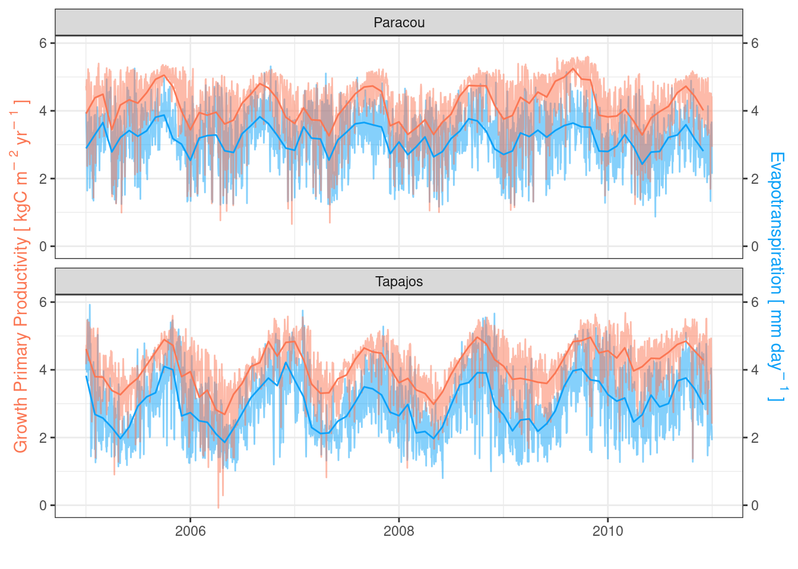

Code
daily <- read_tsv("outputs/evaluation_fluxes.tsv") %>%
filter(variable %in% c("gpp", "et")) %>%
filter(year(date) %in% 2005:2010) %>%
filter(site == "Paracou")
monthly <- daily %>%
group_by(site, date = floor_date(date, "month"), variable) %>%
summarise(l = quantile(simulated, 0.025, na.rm = TRUE),
simulated = mean(simulated, na.rm = TRUE),
h = quantile(simulated, 0.975, na.rm = TRUE))
cols <- c("etp" = "#0da1f8", "gpp" = "#fb7754")
ga <- daily %>%
ggplot(aes(date, simulated, col = variable)) +
geom_line(alpha = 0.5) +
geom_line(data = monthly) +
theme_bw() +
theme(legend.position = "None") +
xlab("") +
scale_y_continuous(
name = expression("Growth Primary Productivity ["~kgC~m^{-~2}~yr^{-~1}~"]"),
sec.axis = sec_axis(trans = ~.*1,
name = expression("Evapotranspiration ["~mm~day^{-~1}~"]"))
) +
theme(
axis.title.y = element_text(color = cols[2]),
axis.title.y.right = element_text(color = cols[1])
) +
scale_color_manual(values = as.vector(cols)) +
ggtitle("(a)")
ga